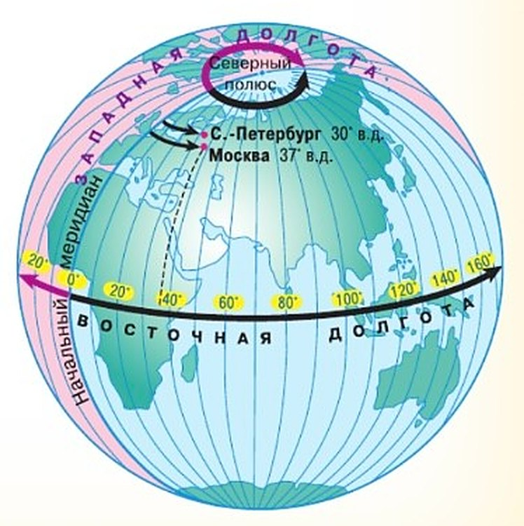

Что значит определить географическую долготу?
Меридианы — это линии долготы. У всех точек одного меридиана долгота одинаковая. Чтобы узнать долготу точки, ищем меридиан, на котором она стоит.
Нулевой — Гринвичский меридиан, его долгота 0°. От него и считаем градусы — строго вдоль параллели, на запад или на восток (рис. 47).
К западу от Гринвича долгота западная (з. д.), к востоку — восточная (в. д.). И та и другая — от 0° до 180°.
Россия — в обоих полушариях, Восточном и Западном: через Чукотку проходит 180-й меридиан.
Раньше страны считали долготу от своих меридианов — через свои главные обсерватории: Англия и США — от Гринвичского, Франция — от Парижского, Россия — от Пулковского. Выбрать начальный меридиан важно: от него зависит отсчёт времени. Вспомни § 17: с какого года считают от Гринвича?
На глобусе и карте полушарий градусы долготы подписаны там, где меридианы пересекают экватор.
Меридианы называют линиями долготы. На меридиане все точки имеют одинаковую долготу. Для того чтобы узнать долготу заданной точки, нужно найти меридиан, на котором она расположена.
Вы уже знаете, что нулевым является Гринвичский меридиан. Его долгота 0°. От Гринвичского меридиана и начинаем отсчёт долготы в градусах, следуя строго вдоль параллели на запад или на восток (рис. 47).
К западу от нулевого меридиана все точки имеют западную долготу (з. д.), к востоку — восточную долготу (в. д.). Западная и восточная долгота изменяется от 0° до 180°.
Россия располагается в обоих полушариях — Восточном и Западном, поскольку территорию нашей страны пересекает 180-й меридиан.
Долготы считали в разное время от разных меридианов. В различных странах для этого использовали свои собственные национальные нулевые меридианы, проходящие, как правило, через центральные обсерватории этих стран. Так, в Англии и США нулевым считался Гринвичский меридиан, во Франции для этой цели использовался Парижский меридиан, в России — Пулковский меридиан и т. д. Выбор начального меридиана очень важен, так как с ним связан отсчёт времени. Вспомните, с какого года стали вести отсчёт от Гринвичского меридиана.
Внимательно посмотрите на глобус и карту полушарий. Там цифры, обозначающие градусы долготы, указаны у точек пересечения меридианов с экватором (см. Приложение).

▲ Вдоль какой линии идут стрелки долготы — вдоль экватора или вдоль меридиана? Где у Москвы пунктир касается экватора?
Географическая долгота — это расстояние в градусах к западу или востоку от нулевого меридиана до меридиана, проведённого через заданную точку.
Определить географическую долготу точки — это значит найти меридиан, на котором она расположена.
1. Чем отсчёт долготы похож на отсчёт широты из § 18 и чем отличается?
2. Почему Россия лежит и в Восточном, и в Западном полушарии, а из Северного и Южного — только в Северном?
3. Почему выбор начального меридиана связан с отсчётом времени?
Зачем нужны часовые пояса?
Земля вращается вокруг оси: одна её сторона постепенно уходит в тень, другая — выходит на Солнце. Поэтому, когда в Хабаровске или Токио ужинают, в Москве и Ростове рабочий день только начинается. И так по кругу.
На каждом меридиане своё солнечное время — одинаковое от Северного полюса до Южного. На небольших расстояниях разница почти незаметна.
Поэтому земной шар поделили на 24 часовых пояса. Внутри пояса время одно, в соседнем — на час другое. Для удобства стран границы поясов меняли, и система стала сложнее. Но страны договорились — и в расписаниях самолётов и поездов нет путаницы.
Во время вращения Земли вокруг своей оси одно её полушарие постепенно уходит в тень, а другое так же постепенно начинает освещаться Солнцем. Поэтому, например, когда жители Хабаровска или Токио ужинают, у москвичей или ростовчан рабочий день только начинается. И так по кругу.
Для каждого меридиана существует своё солнечное время. Оно одинаково для всех пунктов, которые находятся на одном меридиане — от Северного полюса до Южного. На небольших расстояниях разница почти незаметна. И люди договорились поделить наш земной шар на 24 часовых пояса. Внутри каждого пояса отсчёт времени одинаков, а в соседнем отличается на один час. Правда, для удобства каждой страны приходилось вносить изменения. Это усложнило систему отсчёта времени и проведение границ часовых поясов. Но страны всё согласовали, единую систему признали, и путаницы в расписаниях самолётов и поездов не возникает.
Вспомните, как единицы времени связаны с осевым и орбитальным движениями Земли (§ 10).
Часовые пояса позволяют всем странам пользоваться единой системой отсчёта времени.
4. Почему у Насти в Тольятти на час позже — а не на 48 минут?
5. Почему время «впереди» на востоке, а не на западе?
6. Сколько градусов долготы приходится на один часовой пояс?
Шаг за шагом. Определяем географическую долготу
Найдём долготу Санкт-Петербурга и Москвы.
Если точка на меридиане. 1) Находим её на карте. 2) Смотрим, в каком полушарии — Западном или Восточном. 3) Читаем подпись меридиана. Санкт-Петербург стоит на меридиане 30° к востоку от нулевого: его долгота 30° в. д. (рис. 47).
Если точка между меридианами. 1) Берём ближайший меридиан со стороны нулевого. 2) Считаем градусы от него до точки: между меридианами на карте, как и между параллелями, 10°. 3) Прибавляем.
Москва: ближайший меридиан со стороны нулевого — 30° в. д., до Москвы около 7°. Москва восточнее, поэтому 30° + 7° = 37° в. д.
Полные «адреса»: Санкт-Петербург — 60° с. ш., 30° в. д., Москва — около 56° с. ш., 37° в. д.
Определим долготу Санкт-Петербурга и Москвы. Чтобы определить долготу объекта, необходимо:
1. Найти объект на карте.
2. Определить, в каком полушарии, Западном или Восточном, он находится.
3. Определить долготу меридиана, на котором расположен объект. (Так, Санкт-Петербург находится на меридиане, удалённом на 30° к востоку от начального (нулевого) меридиана, его долгота 30° в. д. (см. рис. 47)).
Если объект располагается между меридианами, следует:
1. Определить долготу ближайшего к объекту меридиана со стороны нулевого (Гринвичского) меридиана (шаги 1—3).
2. Определить количество градусов от этого меридиана до объекта. (Учтите, что расстояние между меридианами на карте, как и между параллелями, 10°.)
3. Прибавить получившееся число к долготе найденного ближайшего меридиана. (Так, ближайший к Москве меридиан со стороны нулевого меридиана — 30° в. д. Расстояние от этого меридиана до Москвы около 7°. Москва находится к востоку от меридиана 30° в. д., значит, её долгота примерно 30° + 7° = 37° в. д.)
Таким образом, мы установили географические координаты Санкт-Петербурга — 60° с. ш., 30° в. д. и Москвы — около 56° с. ш., 37° в. д.
7. Найди по схеме «Шаг за шагом» долготу Тольятти.
8. Как найти долготу места в Западном полушарии, например 75° з. д.?
Итоги параграфа
- Назовите материки, через которые проходит нулевой меридиан.
- Назовите географические координаты самой северной и самой южной точек земного шара.
- По физической карте определите географические координаты: а) города Нью-Дели; б) вулкана Везувий; в) города Владивостока.
- Определите географические координаты столиц Мексики, Франции, Австралии.
- Определите координаты вашего областного центра.
- Этот один из красивейших городов мира находится в Европе. Его координаты 50° с. ш., 14° в. д. Как называется этот город?
- На этом острове, центральная часть которого имеет координаты 19° ю. ш., 47° в. д., водятся полуобезьяны — лемуры. Как называется этот остров?
- Эта точка Земли интересна тем, что её географические координаты равны нулю. Где находится эта точка? Найдите её на карте.
- Какие географические объекты имеют координаты: а) 30° с. ш. и 30° в. д.; б) 10° с. ш. и 80° з. д.; в) 35° с. ш. и 140° в. д.?
- Выполните работу «Географический адрес моего населённого пункта», заполнив в тетради таблицу.
| Мой населённый пункт | |
|---|---|
| 1. На каком материке находится | … |
| 2. Государство | … |
| 3. Географические координаты населённого пункта | … |
| 4. В каком направлении от Москвы находится | … |
| 5. Какое расстояние от Москвы, в км | … |
- Почему герои романа Ж. Верна «Дети капитана Гранта» в поисках потерпевших кораблекрушение вынуждены были посетить все материки, через которые проходила параллель 37° ю. ш.?
- В одном из своих произведений В. В. Набоков пишет: «В кабинете… нашёлся в книжном шкафу великолепный атлас. Мир, сперва показываемый как плотный шар, туго обтянутый сеткой долгот и широт, развёртывался плоско, разрезался на две половины и затем подавался по частям». Балтийское море кажется ему похожим на коленопреклонённую женщину, Италия — на ботфорт, Цейлон — на каплю воды.
Найдите на карте Скандинавский полуостров, полуостров Камчатка, материки Африка и Австралия, озеро Байкал. Какие образы у вас складываются?
Проверь себя
Москва
Около 37° в. д. — к востоку от Гринвича.
Мехико
Около 99° з. д. — Америка к западу от Гринвича.
Санкт-Петербург
30° в. д.
Мыс Дежнёва на Чукотке
Около 170° з. д. — за 180-м меридианом.
Тольятти
Около 49° в. д.
Панамский канал
Около 80° з. д.
Париж
Около 2° в. д. — чуть восточнее Гринвича.
Анталия
Около 31° в. д.
Считают от экватора
Вдоль меридиана, на север или на юг.
Считают от Гринвичского меридиана
Вдоль параллели, на запад или на восток.
Бывает до 90°
До полюса — четверть окружности.
Бывает до 180°
До 180-го меридиана — половина окружности.
С. ш. и ю. ш.
Северная и южная.
В. д. и з. д.
Восточная и западная.
Ищем свою параллель
У всех точек параллели широта одна.
Ищем свой меридиан
У всех точек меридиана долгота одна.
1. От чего отсчитывают географическую долготу?
2. Какая долгота у Москвы?
3. Почему Россия лежит и в Восточном, и в Западном полушарии?
4. Какой бывает долгота?
5. На сколько часовых поясов поделили земной шар?
6. В Москве 12:00. Сколько сейчас у Насти в Тольятти?
Расскажи вслух
Что такое долгота
- Расстояние в градусах от Гринвичского меридиана до меридиана точки, вдоль параллели.
- К востоку — в. д., к западу — з. д., обе до 180°; Россию пересекает 180-й меридиан.
- Раньше страны считали от своих меридианов — Парижского, Пулковского; с 1884 года — от Гринвичского.
Зачем нужны часовые пояса
- Земля вращается — на разных меридианах разное солнечное время.
- Земной шар поделили на 24 пояса: внутри время одно, в соседнем — на час другое.
- У Насти в Тольятти на час позже; в России 11 поясов.
Как найти долготу по карте
- Найти точку, определить полушарие — Западное или Восточное.
- На меридиане — прочитать подпись: Санкт-Петербург 30° в. д.
- Между меридианами — от ближайшего со стороны нулевого прибавить градусы: Москва 30° + 7° = 37° в. д.
Загадки по координатам
- 50° с. ш., 14° в. д. — Прага; 19° ю. ш., 47° в. д. — Мадагаскар с лемурами.
- 0° и 0° — Гвинейский залив.
- «Дети капитана Гранта»: знали только широту — пришлось искать вдоль всей параллели.